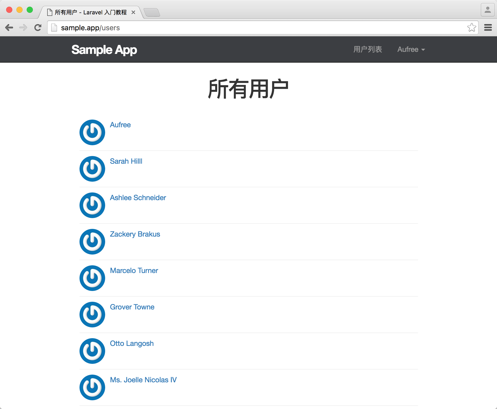
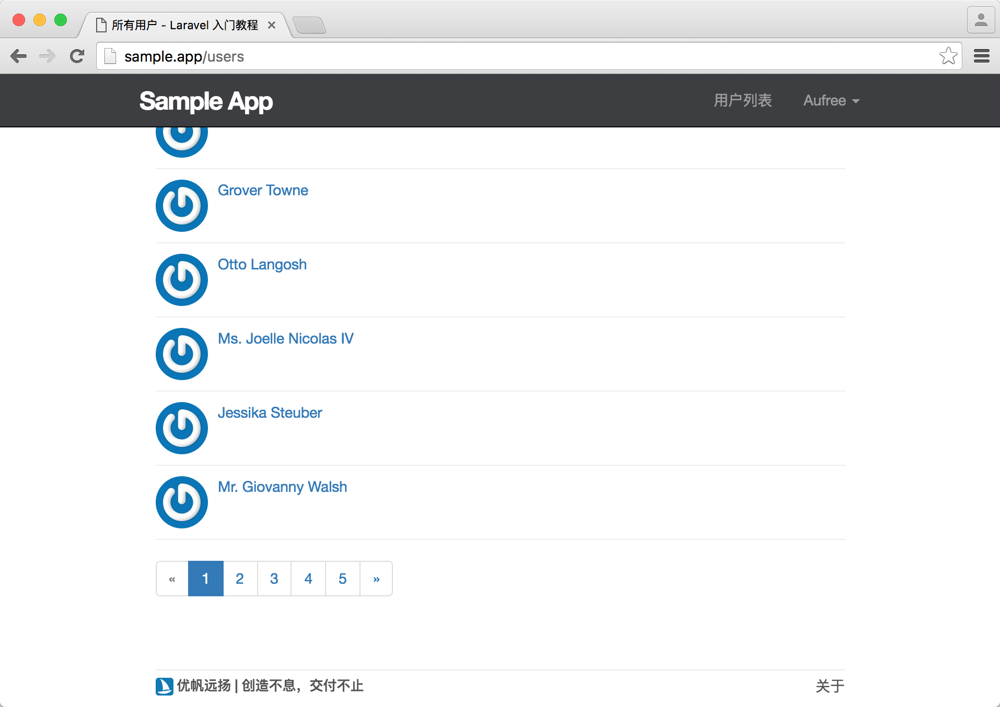
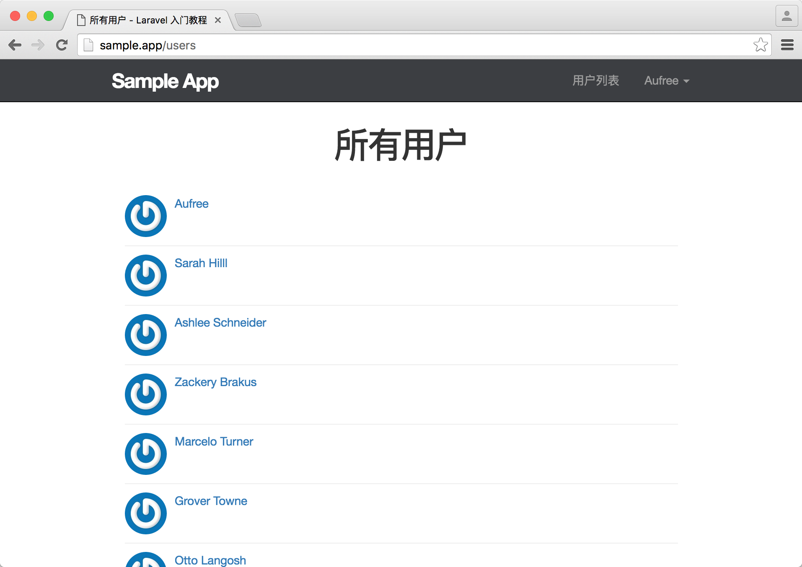

8.4. 列出所有用户
列出所有用户
本节我们将从数据库取出所有用户数据，并在用户列表页面将所有用户进行展示，并在顶部导航添加访问入口。最后我们还会为 1 号加上管理员权限，让他可以删除其他的用户。
用户列表
根据我们前面使用 resource 方法生成的符合 RESTful 架构的路由可知，用户列表对应用户控制器的 index 动作，页面 URL 对应 /users。接下来我们将在用户控制器中加入 index 动作。并且因为用户列表的访问权限是公开的，所以我们还需要在 Auth 中间件 except 中新增 index 动作来允许游客访问。
app/Http/Controllers/UsersController.php
<?php
namespace App\Http\Controllers;
.
.
.
class UsersController extends Controller
{
public function __construct()
{
$this->middleware('auth', [
'except' => ['show', 'create', 'store', 'index']
]);
.
.
.
}
public function index()
{
$users = User::all();
return view('users.index', compact('users'));
}
.
.
.
}可以看到，在 index 方法中，我们使用 Eloquent 用户模型将所有用户的数据一下子完全取出来了，这么做会影响应用的性能，后面我们再来对该代码进行优化，通过分页的方式来读取用户数据。在将用户数据取出之后，与 index 视图进行绑定，这样便可以在视图中使用 $users 来访问所有用户实例。
接下来让我们继续创建 index 视图，用于显示所有用户列表的信息。
resources/views/users/index.blade.php
@extends('layouts.default')
@section('title', '所有用户')
@section('content')
<div class="col-md-offset-2 col-md-8">
<h1>所有用户</h1>
<ul class="users">
@foreach ($users as $user)
<li>
<img src="{{ $user->gravatar() }}" alt="{{ $user->name }}" class="gravatar"/>
<a href="{{ route('users.show', $user->id )}}" class="username">{{ $user->name }}</a>
</li>
@endforeach
</ul>
</div>
@stop我们使用 @foreach 的方法将所有用户的数据逐个输出，并在页面上显示他们的头像和用户名。
针对用户列表视图，我们再来进行样式优化。
resources/assets/sass/app.scss
.
.
.
/* Users index */
.users {
list-style: none;
margin: 0;
padding-left: 0;
li {
overflow: auto;
padding: 10px 0;
border-bottom: 1px solid $gray-lighter;
}
}现在用户列表页已经可以访问了，接下来让我们对顶部导航进行编辑，为用户列表加上指定链接，方便用户跳转到用户列表页面进行查看。
resources/views/layouts/_header.blade.php
<header class="navbar navbar-fixed-top navbar-inverse">
<div class="container">
<div class="col-md-offset-1 col-md-10">
<a href="/" id="logo">Sample App</a>
<nav>
<ul class="nav navbar-nav navbar-right">
@if (Auth::check())
<li><a href="{{ route('users.index') }}">用户列表</a></li>
<li class="dropdown">
<a href="#" class="dropdown-toggle" data-toggle="dropdown">
{{ Auth::user()->name }} <b class="caret"></b>
</a>
<ul class="dropdown-menu">
<li><a href="{{ route('users.show', Auth::user()->id) }}">个人中心</a></li>
<li><a href="{{ route('users.edit', Auth::user()->id) }}">编辑资料</a></li>
<li class="divider"></li>
<li>
<a id="logout" href="#">
<form action="{{ route('logout') }}" method="POST">
{{ csrf_field() }}
{{ method_field('DELETE') }}
<button class="btn btn-block btn-danger" type="submit" name="button">退出</button>
</form>
</a>
</li>
</ul>
</li>
@else
<li><a href="{{ route('help') }}">帮助</a></li>
<li><a href="{{ route('login') }}">登录</a></li>
@endif
</ul>
</nav>
</div>
</div>
</header>在做完上面这一切工作之后，用户列表页面已经能够正常访问了，但现在还有两个问题：
- 注册用户太少；
- 用户列表页不支持分页浏览，用户量大的时候会影响性能和用户体验；
接下来让我们来着手解决这两个问题。
示例用户
在实际的项目开发过程中，我们经常会用到一些假数据来对数据库进行填充以方便调试程序，原始的做法是手工一个个在数据库中创建，或者从队友的机器那导出数据填充到开发机器中。Laravel 提供了一套更加现代化、非常简单易用的数据填充方案。接下来让我们使用 Laravel 提供的数据填充来批量生成假用户。
假数据的生成分为两个阶段：
模型工厂
Laravel 默认为我们集成了 Faker 扩展包，使用该扩展包可以让我们很方便的生成一些假数据。
示例如下：
// 使用 factory 来创建一个 Faker\Generator 实例
$faker = Faker\Factory::create();
// 生成用户名
$faker->name; // "Janie Roob"
// 生成安全邮箱
$faker->safeEmail; // "claire.wuckert@example.net"
// 生成随机日期
$faker->date // "2011-02-10"
// 生成随机时间
$faker->time // "13:03:55"我们可以借助 Faker 和 Eloquent 模型工厂来为指定模型的每个字段设置随机值。
本项目中生成的模型工厂如下：
database/factories/UserFactory.php
<?php
use Faker\Generator as Faker;
/*
|--------------------------------------------------------------------------
| Model Factories
|--------------------------------------------------------------------------
|
| This directory should contain each of the model factory definitions for
| your application. Factories provide a convenient way to generate new
| model instances for testing / seeding your application's database.
|
*/
$factory->define(App\Models\User::class, function (Faker $faker) {
static $password;
return [
'name' => $faker->name,
'email' => $faker->unique()->safeEmail,
'password' => $password ?: $password = bcrypt('secret'),
'remember_token' => str_random(10),
];
});define 定义了一个指定数据模型（如此例子 User）的模型工厂。define 方法接收两个参数，第一个参数为指定的 Eloquent 模型类，第二个参数为一个闭包函数，该闭包函数接收一个 Faker PHP 函数库的实例，让我们可以在函数内部使用 Faker 方法来生成假数据并为模型的指定字段赋值。
让我们对生成的模型工厂文件进行修改，修改后如下。
database/factories/UserFactory.php
<?php
use Faker\Generator as Faker;
/*
|--------------------------------------------------------------------------
| Model Factories
|--------------------------------------------------------------------------
|
| This directory should contain each of the model factory definitions for
| your application. Factories provide a convenient way to generate new
| model instances for testing / seeding your application's database.
|
*/
$factory->define(App\Models\User::class, function (Faker $faker) {
$date_time = $faker->date . ' ' . $faker->time;
static $password;
return [
'name' => $faker->name,
'email' => $faker->safeEmail,
'password' => $password ?: $password = bcrypt('secret'),
'remember_token' => str_random(10),
'created_at' => $date_time,
'updated_at' => $date_time,
];
});我们使用生成的假日期对用户的创建时间和更新时间进行赋值。
数据填充
在 Laravel 中我们使用 Seeder 类来给数据库填充测试数据。所有的 Seeder 类文件都放在 database/seeds 目录下，文件名需要按照『驼峰式』来命名，且严格遵守大小写规范。Laravel 默认为我们定义了一个 DatabaseSeeder 类，我们可以在该类中使用 call 方法来运行其它的 Seeder 类，以此控制数据填充的顺序。我们可以使用下面命令来生成一个 UsersTableSeeder 文件，用于填充用户相关的假数据。
$ php artisan make:seeder UsersTableSeeder在我们定义好了用户模型工厂之后，便可以在生成的用户数据填充文件中使用 factory 这个辅助函数来生成一个使用假数据的用户对象。
现在让我们使用该方法来创建 50 个假用户。
database/seeds/UsersTableSeeder.php
<?php
use Illuminate\Database\Seeder;
use App\Models\User;
class UsersTableSeeder extends Seeder
{
/**
* Run the database seeds.
*
* @return void
*/
public function run()
{
$users = factory(User::class)->times(50)->make();
User::insert($users->makeVisible(['password', 'remember_token'])->toArray());
$user = User::find(1);
$user->name = 'Aufree';
$user->email = 'aufree@yousails.com';
$user->password = bcrypt('password');
$user->save();
}
}times 和 make 方法是由 FactoryBuilder 类 提供的 API。times 接受一个参数用于指定要创建的模型数量，make 方法调用后将为模型创建一个 集合。makeVisible 方法临时显示 User 模型里指定的隐藏属性 $hidden，接着我们使用了 insert 方法来将生成假用户列表数据批量插入到数据库中。最后我们还对第一位用户的信息进行了更新，方便后面我们使用此账号登录。
接着我们还需要在 DatabaseSeeder 中调用 call 方法来指定我们要运行假数据填充的文件。
database/seeds/DatabaseSeeder.php
<?php
use Illuminate\Database\Seeder;
use Illuminate\Database\Eloquent\Model;
class DatabaseSeeder extends Seeder
{
/**
* Run the database seeds.
*
* @return void
*/
public function run()
{
Model::unguard();
$this->call(UsersTableSeeder::class);
Model::reguard();
}
}完成上面操作之后，我们便可以开始为用户生成批量假数据了，在运行生成假数据的命令之前，我们需要使用 migrate:refresh 命令来重置数据库，之后再使用 db:seed 执行数据填充。
$ php artisan migrate:refresh
$ php artisan db:seed如果我们要单独指定执行 UserTableSeeder 数据库填充文件，则可以这么做：
$ php artisan migrate:refresh
$ php artisan db:seed --class=UsersTableSeeder你也可以使用下面一条命令来同时完成数据库的重置和填充操作：
$ php artisan migrate:refresh --seed
分页
现在我们已拥有足够多的用户了，接下来让我们着手开发用户列表页面的分页功能。在 Laravel 应用中，分页功能的开发非常简单，接下来让我们看下具体如何实现。
首先，我们需要先对用户控制器中获取所有用户数据的方法进行更改，修改如下。
app/Http/Controllers/UsersController.php
<?php
namespace App\Http\Controllers;
.
.
.
class UsersController extends Controller
{
.
.
.
public function index()
{
$users = User::paginate(10);
return view('users.index', compact('users'));
}
.
.
. 默认状况下，页面的当前页数由 HTTP 请求所带的 page 参数决定，当你访问 http://sample.app/users?page=2 链接时，获取的是第二页的用户列表信息，Laravel 会自动检测到 page 的值并插入由分页器生成的链接中。在上面代码我们使用 paginate 方法来指定每页生成的数据数量为 10 条，即当我们有 50 个用户时，用户列表将被分为五页进行展示。
在调用 paginate 方法获取用户列表之后，便可以通过以下代码在用户列表页上渲染分页链接。
{!! $users->render() !!}由 render 方法生成的 HTML 代码默认会使用 Bootstrap 框架的样式，渲染出来的视图链接也都统一会带上 ?page 参数来设置指定页数的链接。另外还需要注意的一点是，渲染分页视图的代码必须使用 {!! !!} 语法，而不是 {{ }}，这样生成 HTML 链接才不会被转义。
让我们对用户列表页视图进行修改，加上渲染分页视图的代码。
resources/views/users/index.blade.php
@extends('layouts.default')
@section('title', '所有用户')
@section('content')
<div class="col-md-offset-2 col-md-8">
<h1>所有用户</h1>
<ul class="users">
@foreach ($users as $user)
<li>
<img src="{{ $user->gravatar() }}" alt="{{ $user->name }}" class="gravatar"/>
<a href="{{ route('users.show', $user->id )}}" class="username">{{ $user->name }}</a>
</li>
@endforeach
</ul>
{!! $users->render() !!}
</div>
@stop
使用局部视图重构
为了对视图模块进行细分，使目录结构更好理解，接下来让我们对用户列表页进行重构，将单个用户视图抽离成一个完整的局部视图。首先我们引入用户局部视图到用户列表上。
resources/views/users/index.blade.php
@extends('layouts.default')
@section('title', '所有用户')
@section('content')
<div class="col-md-offset-2 col-md-8">
<h1>所有用户</h1>
<ul class="users">
@foreach ($users as $user)
@include('users._user')
@endforeach
</ul>
{!! $users->render() !!}
</div>
@stop接着再对用户局部视图进行创建。
resources/views/users/_user.blade.php
<li>
<img src="{{ $user->gravatar() }}" alt="{{ $user->name }}" class="gravatar"/>
<a href="{{ route('users.show', $user->id )}}" class="username">{{ $user->name }}</a>
</li>修改完成后刷新页面测试：
